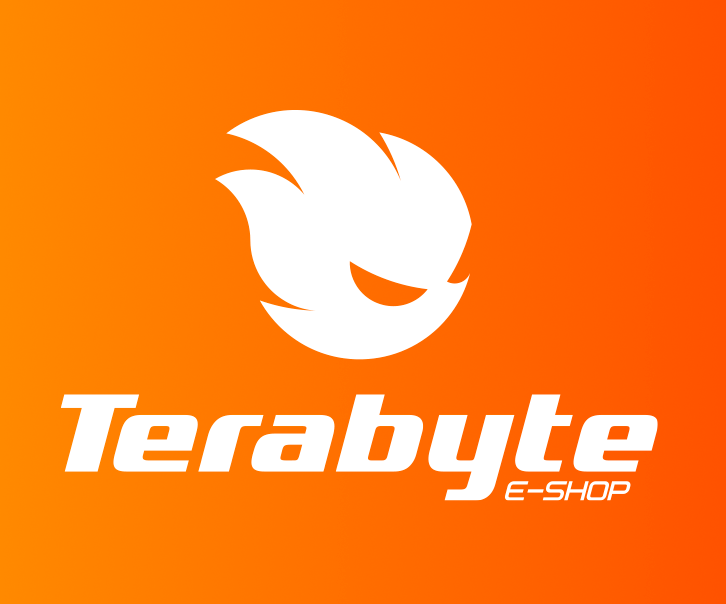

Junte-se a nós na luta pela sustentabilidade! Recicle seus equipamentos eletrônicos conosco e ajude a preservar o planeta.
Acreditamos em um futuro sustentável e estamos comprometidos em fazer a nossa parte.
Conheça nosso AppQuem Somos
Somos uma empresa comprometida com a sustentabilidade e a preservação do meio ambiente. Com anos de experiência no setor de reciclagem de equipamentos eletrônicos, oferecemos soluções seguras e eficientes para ajudar nossos clientes a descartar seus equipamentos antigos de maneira responsável.
Nossos Serviços
Oferecemos uma ampla gama de serviços de reciclagem de equipamentos eletrônicos para atender às necessidades de nossos clientes. Desde a coleta dos equipamentos até o processamento e recuperação dos materiais, nossa equipe especializada garante que todo o processo seja realizado de forma segura e responsável.
Nosso App
Nosso aplicativo de agendamento de coleta é a maneira mais fácil e conveniente de reciclar seus equipamentos eletrônicos antigos. Com apenas alguns cliques, você pode agendar uma coleta em sua casa ou empresa, sem a necessidade de sair de casa ou perder tempo na estrada.
Baixar App
Contato
Entre em contato conosco por telefone ou e-mail para esclarecer dúvidas ou solicitações relacionadas aos nossos serviços de reciclagem de equipamentos eletrônicos, incluindo agendamento de coletas, processamento e recuperação de materiais. Nossa equipe especializada está disponível para ajudar em questões relacionadas ao descarte correto de seus equipamentos eletrônicos.
Empresas Parceiras
Nós nos orgulhamos de trabalhar com diversas empresas que compartilham da nossa visão de um mundo mais sustentável e responsável ambientalmente.
- 